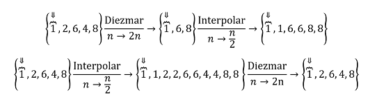

Contents
Objetivos
- Manipulación básica de MATLAB
- Gráficas de señales reales y complejas discretas
- Transformación de señales discretas (escalamiento y traslaciones)
- Calculo de energía y potencia de señales discretas
Introducción
Diezmado e Interpolación
El escalamiento de las señales en tiempo discreto debe ser realizado con cuidado. Para señales en tiempo discreto, el escalamiento en el tiempo es equivalente a incrementar o decrecer la extensión de la señal. Los problemas que se suscitan en el escalamiento en el tiempo no se caracterizan por lo que sucede, sino cómo sucede.
Diezmado
Supóngase que una señal corresponde a una señal analógica x(t) muestreada en intervalos . La señal entonces corresponde a la señal comprimida  muestreada en y contiene unicamente muestras alternativas de (que corresponden a ). Se puede obtener también directamente de (no mediante su forma comprimida) si se muestrea en intervalos de (o en un intervalo de muestreo ). Esto implica una reducción doble en el intervalo de muestreo. El diezmado por un factor es equivalente al muestreo de en intervalos de y conlleva a una reducción del intervalo de muestreo. La señal diezmada es generada a partir de reteniendo cada muestra que corresponde a los índices y descartando todos las demás.
muestreada en y contiene unicamente muestras alternativas de (que corresponden a ). Se puede obtener también directamente de (no mediante su forma comprimida) si se muestrea en intervalos de (o en un intervalo de muestreo ). Esto implica una reducción doble en el intervalo de muestreo. El diezmado por un factor es equivalente al muestreo de en intervalos de y conlleva a una reducción del intervalo de muestreo. La señal diezmada es generada a partir de reteniendo cada muestra que corresponde a los índices y descartando todos las demás.
Interpolación
Si corresponde a muestreada en intervalos , entonces corresponde a muestreada en y posee el doble de longitud que con una nueva muestra entre muestas adyacentes de . Si una expresión para (o la señal analógica equivalente) fueran conocidas, no habría problema en determinar estos nuevos valores de muesta. Si sólo se proporcionan valores de muestra de (sin su forma analítica), la mejor forma de proceder es interpolar muestras intermedias. Por ejemplo, se puede escoger cada cada nuevo valor de intervalo como cero (interpolación en cero), una constante igual al valor de muestreo anterior (interpolación de escalón), o el promedio de los valores de muestreo adyacentes (interpolación lineal). Comúnmente se refiere a la interpolación en cero como "muestreo hacia arriba" y juega un rol importante en los esquemas prácticos de la interpolación. La interpolación en factores es equivalente al muestreo de en intervalos e implica un aumento de veces en ambos, tanto la tasa de muestreo como la extensión de la señal.
Algunas Consideraciones
Considénrese dos conjuntos de operaciones mostradas a continuación:
A primera vista, ambos conjuntos de operaciones comienzan con y aparentemente recuperan a $$x[n], sugiriendo que la interpolación y el diezmado son operaciones inversas. De hecho, sólo la segunda secuencia de operaciones (interpolación seguida de diezmado) recupera exactamente. Para entender cómo, sea
Usando interpolación por escalón, por ejemplo, las dos secuencias de operaciones son las que siguen

Ahora podemos apreciar que, efectivamente, el diezmado es la función inversa de la interpolación, pero que lo contrario no es necesariamente cierto. Después de todo, es altamente improbable que cualquier esquema de interpolación recupere o prediga el valor exacto de las muestras que fueron descartadas durante el diezmado. En situaciones en las que tanto la interpolación como el diezmado deben ser realizados en sucesión, es entonces preferible interpolar primero. En la práctica, por supuesto, la interpolación o el diezmado deben preservar el contenido de información de la señal original, y esto impone restricciones en la tasa a la cual las muestras originales fueron adquiridas.
Ejemplos
Para la función Se realiza una extensión y compresión.

Desarrollo
Se plantea la solución a seis ejercicios, donde cada uno requiere del uso de Matlab como herramienta de cálculo y análisis; comenzando una nueva sección (para la publicación) en cada uno de ellos.
Ejercicio 1
Crea una función que se llame fun1 y reciba dos parametros y la función debe regresar la evaluación , esta función debe trabajar con , y . Debe mostrar su código en el reporte (sin ejecutar).
clear; clc; close all;
r=input('Ingresa r: '); W=input('Ingresa W: '); n=input('Ingresa el vector n: '); X_W=fun1(r,W,n1);
function F=fun1(r,W,n)
F=(r.^n).*cos(W.*n)+(r.^n).*sin(W.*n)*1j;
figure1 = figure; stem3(n,real(F),imag(F)); xlabel('n','FontWeight','bold','FontSize',12); ylabel('Re(x[n])','FontWeight','bold','FontSize',12); zlabel('Im(x[n])','FontWeight','bold','FontSize',12); title('x[n]=r^ncos[\Omegan]+ r^nsen(\Omegan)j'); grid on end
Ejercicio 2
Construya una función que gráfique funciones de en el formato de su elección y pruebe su código mostrando la gráfica de vs para para , no debe incluir el código, solo el uso de la función para mostrar la gráfica, puede utilizar una función anonima para este fin.
Ejercicio 3
Construya una función que gráfique funciones de en el formato de su elección y pruebe su código mostrando la gráfica de la función exponencial del primer problema, no debe incluir el código, solo el uso de la función para mostrarla gráfica. Reporte la gráfica de para , y (recuerde que ya tiene una función para esto). Reporte la gráfica de vs y ![$\angle f[n]$](ASySPrac03CarlosMartinez_eq12048250087022819900.png) vs . Solo reporte las graficas.
vs . Solo reporte las graficas.
Ejercicio 4
Programe una función que calcule la energía de una señal en tiempo discreto la fucion se debe llamar energiadis. La función recibe dos paramétros de entrada: el vector de tiempo y las alturas asignadas. La función regresa la energia de la señal y despliega la gráfica de la señal. Debe mostrar su código en el reporte (sin ejecutar).
clear; clc; close all; n2=input('Ingresa el vector de tiempo "n": '); h=input('Ingresa el vector de alturas de la señal: '); En=energiadis(n2,h);
function E=energiadis(n,h) E1=(abs(h)).^2; E=sum(E1) figure stem(n,h) xlabel('n','FontWeight','bold','FontSize',12); ylabel('x[n]','FontWeight','bold','FontSize',12); title('Gráfica de x[n]') grid on ax = gca; ax.XAxisLocation = 'origin'; ax.YAxisLocation = 'origin'; ax.Box = 'off'; end
Ejercicio 5
Resuelva el problema 3.1.1 c) de Lathi, aplicando su función anterior
PROBLEMA 3.1.1 Encuentra la energía de la señal descrita en la fig. P3.1-1c
Ex=28
Ejercicio 6
Resuelve el problema 3.2.3 de Lathi
PROBLEMA 3.2.3 Para la señal mostrada en la fig. P3.1-1b, graficar las siguientes señales.
- x[-n]
- x[n+6]
- x[n-6]
- x[3n]
- x[n/3]
- x[3-n]
clear; clc; close all; u= @(n) heaviside(n); x= @(n) n.*u(n)-2*n.*u(n-3)+6*u(n-3)-6*u(n-6)+n.*u(n-6); n=-20:20; figure stem(n,x(n)); grid on; title('x[n]') axis([-1 7 0 3.5]) figure for i=1:6 subplot(2,3,i) switch i case 1 stem(n,x(-n)) title('x[-n]'); axis([-7 3 0 3.5]); case 2 stem(n,x(n+6)) title('x[n+6]'); axis([-7 3 0 3.5]); case 3 stem(n,x(n-6)) title('x[n-6]'); axis([5 13 0 3.5]); case 4 stem(n,x(3*n)) title('x[3n]'); axis([-2 3 0 3.5]); case 5 stem(n,x(n/3)) title('x[n/3]'); axis([-2 20 0 3.5]); case 6 stem(n,x(3-n)) title('x[3-n]'); axis([-4 4 0 3.5]); end xlabel('n'); ylabel('x[n]'); grid on ax = gca; ax.XAxisLocation = 'origin'; ax.YAxisLocation = 'origin'; ax.Box = 'off'; end
Apendice A
Puede consultar los codigos de programación de cada uno de los ejercicios en la siguiente carpeta
Referencias
- Lathi, B. (2005). Linear Systems and Signals. E.U.A.: Oxford University Press
- Moore, H. (2009). MATLAB for Engineers. E.U.A.: Prentice Hall.
- Ashok Ambardar. (1999). Analog and Digital Signal Processing. México D. F., México: BROOKS/COLE PUBLISHING COMPANY.
- Hwei P. Hsu. (2013). Señales y Sistemas. México D. F., México: McGrawHill.